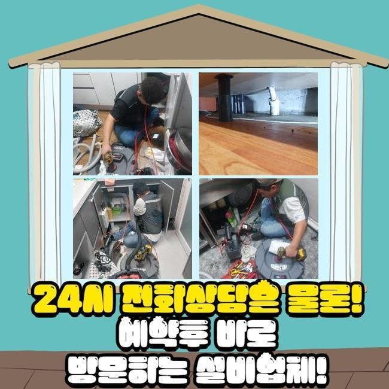
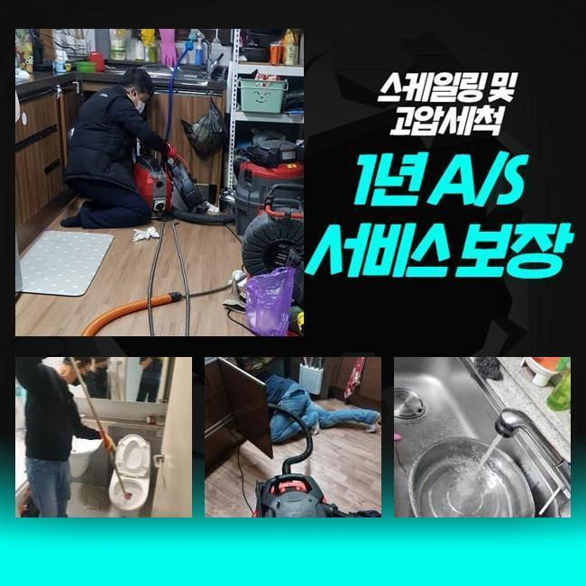
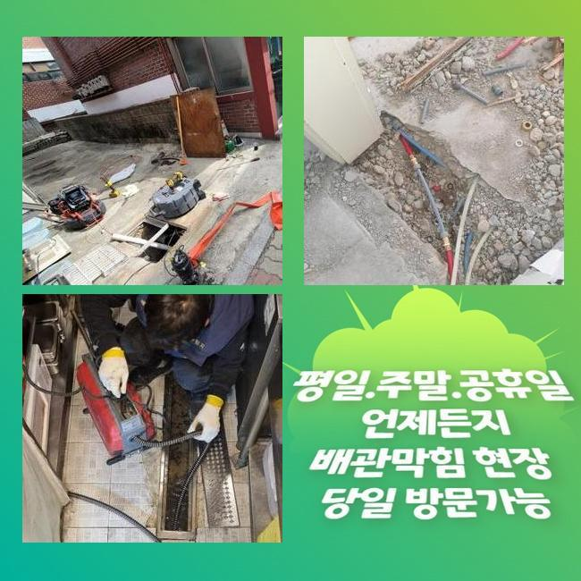
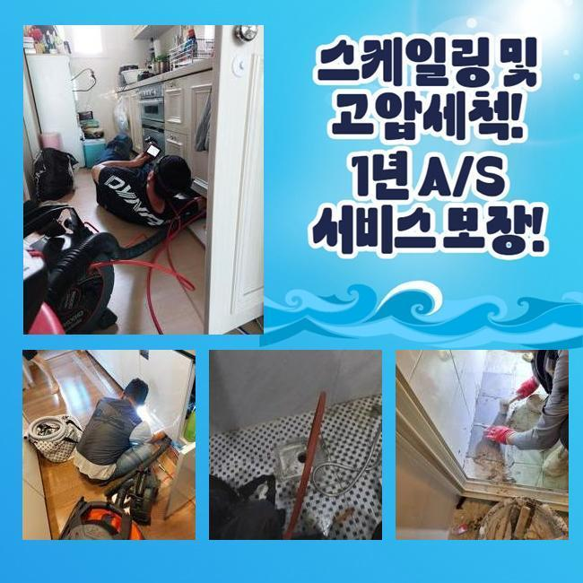
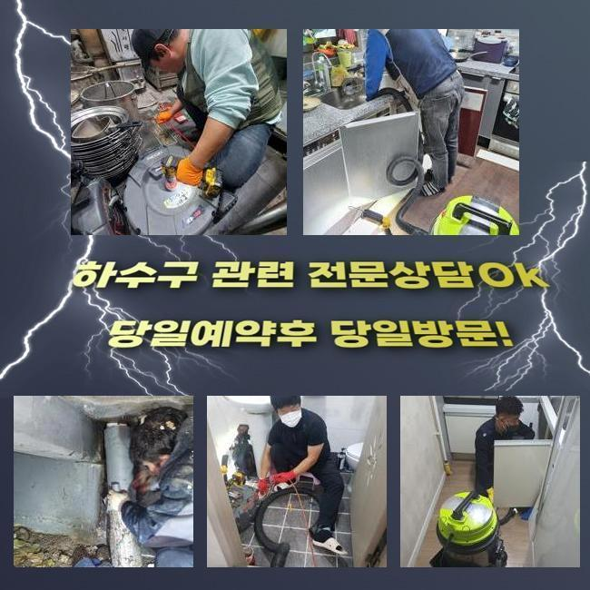
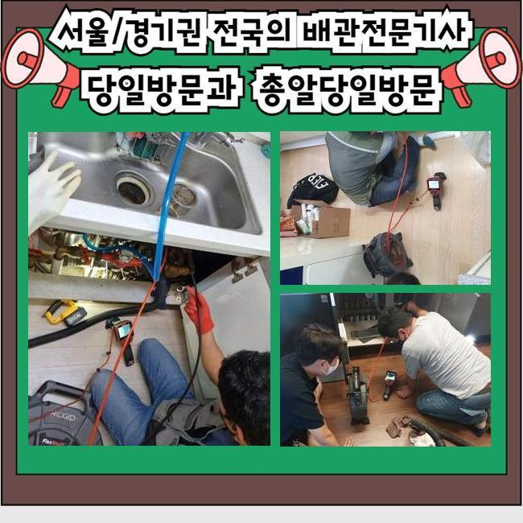
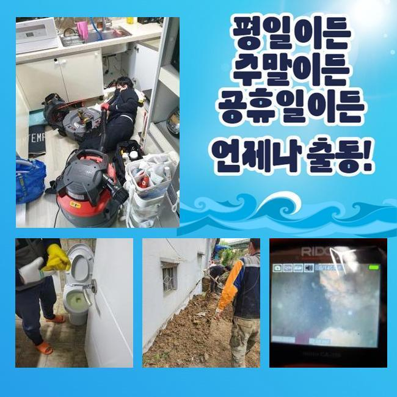

🏠 동작구 노량진동세탁실역류 대방동 오수맨홀청소 출장설비
용인 하수구막힘 전문 시공 후기

📋 작업 개요
- 위치: 용인
- 서비스 유형: 하수구막힘, 배관막힘, 맨홀막힘, 역류해결, 배관청소, 고압세척, 악취차단
- 작업 일시: 2025. 5. 21. 22:05
- 업체명: 하수구수사대 (010-5615-2118)
🔍 문제 상황
동작구 노량진동세탁실역류 대방동 오수맨홀청소 출장설비
배수구와 관련된 다양한 이슈들을 수리 해드리고 있는 하수설비 수리 전문진입니다
일상 생활 중에 대량의 물을 사용하는 화장실 하수구는 물때와 오염 물질이 자주 발생해요
입주민이 많은 다세대 주택일수록 수도관의 노화로 인해서 노폐물이 빈번하게 쌓이게 됩니다
배수관 안쪽에서 여러가지 노폐물이 부패하면서 지독한 냄새가 올라옵니다
이와같은 문제가 발생했을땐 일반적으로 추천되는 트랩같은걸 설치해봐도 지독한 냄새를 없애주는 효력은 없습니다
이번에 작업했던 배수구 막힘 현장이 같은 이슈가 발생한 사례였죠
고객분께서는 트랩도 구매해서 설치하고 세정제품을 활용하여 청소를 했음에도 계속 올라오는 악취등으로 의뢰를 맡기셨어요
욕실의 배수관 트랩등이 전혀 도움이 되지 않을때 어떤식으로 악취를 없앨 수 있는 건지 알려드릴게요
욕실에 이상이 있다는 전화를 받고 저희들이 방문을 드린 고객님 댁은 여러세대가 모여있는 빌라였습니다
작업지 주변을 둘러봤더니 하수관 주변에 하수 및 찌꺼기가 그대로 있었어요

🔎 원인 분석
💡 전문가 진단: 정밀 진단 장비를 사용하여 슬러지의 고착 여부를 판명하고 타격/세척 작업을 실시했습니다.
수도를 틀어보니 현저히 느린 속도로 내려가는걸 볼 수 있었어요
의뢰인께서는 어제부터 갑자기 물이 잘 안내려가는 듯한 느낌이 있음을 인지하셨다고 했어요
언제가부터인가 하수가 잘 내려가질 않고 수도관에 문제점이 생긴건가 하는 마음에 전용세제를 구매하셔서 화장실 바닥쪽을 세척했으나 딱히 효력이 없어서 곤란하다고 하셨어요
비정상적인 배수 속도와 점점 강해지는 악취를 보면 사례자님 댁의 하수시설은 배수구에 상당량의 오염원이 쌓여있는 것으로 보여졌습니다
저희 전문진은 보다 면밀하게 이유를 파악하기 위해서 검사가 가능한 장치를 준비했답니다
하수관 속을 볼 수 있도록 석션장치를 사용해서 배수관 작업위치 근처에 모여있는 물과 오염물질을 청소했습니다
고객님께서 설치하셨던 트랩을 분리한 후에 하수구로 내시경기를 집어넣었어요
모니터를 통해 들여다보니 하수구 초반부에 머리카락과 불순물이 층을 이루고 있는게 보여졌습니다
이러한 오염원으로 인해 배수관이 매우 좁아진 상태였답니다
현장의 기술진은 배수관을 석션기기로 정리 해가면서 반복적으로 내시경기기로 하수관의 내부를 확인했어요
하수관의 마지막 부위에 도달했을때 악취가 심했던 막힘 범인을 발견했습니다
수도관에 주의하지 않고 내려버린 오염물질이 한 부분에 적재되면서 만들어지게 된 뭉텅이가 배수관을 막기 직전이였습니다

🔧 작업 과정
현재 이러한 찌꺼기 뭉치가 배관을 완벽하게 막지는 않은 상태였지만 오랜 기간동안 단단하게 변형이 된 상태였어요
하수라인이 구부러지는 부위에 쌓이면서 계속 내려오는 불순물과 합쳐지면서 몸집을 불리고 있었습니다
이런 상황일때는 사용을 하면 할수록 상황이 안좋아져서 하수관을 완전하게 막으면서 역류현상을 일으킵니다
오랜 시간동안 쌓인 슬러지로 인하여 악취 또한 심해집니다
저희 전문진은 막힘문제가 심각해지는 것을 방지하기 위하여 최대한 빠르게 슬러지를 처리했어요
역한 냄새까지 올라오던 사례자님 집의 하수설비는 입구부터 많은 양의 오염물질이 축적되어 있었고 수로 내부에 생성된 딱딱한 침전물이 고착된 상태였답니다
단단한 슬러지를 하수구로부터 제거할 수 있도록 샤프트기기를 이용하여 분리작업을 진행했어요
초반부에 모여있던 머리카락과 침전물을 청소하면서 원인이 되는 부분까지 장비를 투입시켰어요
원인 발생 부분에서는 샤프트기기의 체인 회전수를 높이며 제거가 힘든 오염물질을 분쇄하여 배출했습니다
원인 발생 지점의 이물질 파쇄 작업을 끝낸 후에는 석션기계를 활용하여 바닥에 있는 오염물질을 정리했어요
석션기 이용까지 마치고나서 내시경장비를 투입해 배수구 안쪽 상황을 재점검 했습니다
모니터로 본 하수관 내벽은 이물질로 막혀있던 모습은 흔적도 없이 깔끔해진 상태였어요
마무리로 화장실 하수관 시공 반경으로 다량의 물을 내려보내면서 통수 테스트를 계속했어요
정상적으로 배수가 진행되는걸 체크하고 안심하고 작업을 마무리 할 수 있었어요
이번에 같이 보신 하수설비 수리 현장처럼 욕실 바닥의 배관으로 들어 온 오염원은 배수구 안쪽에 쌓이면서 악취등을 유발시켜요
욕실 바닥에 트랩을 사용하실땐 냄새 차단 용도가 아닌 머리카락등이 들어가는 것을 방지하는 역할로 생각하시는게 좋은 방법입니다
이물질이 들어가는 것을 예방하면서 규칙적인 배수관 세척을 진행하셔서 배수구의 오염등을 방지하시는 습관도 중요합니다
침전물을 세척하는데 매우 유용한 하수관 전용약품은 일반 매장에서도 구매가 가능하므로 청소할때 이용하시는걸 권장하고 있습니다


✅ 작업 완료
이처럼 하수구 세척과 트랩 이용에도 화장실에서 올라오는 냄새에 크게 도움이 안된다고 보인다면 곧바로 전문진을 알아보시는걸 권해드리고 있어요
막힘현상이 발견 되었다면 막힘의 이유를 처리하기 위한 배수구 점검이나 전문 시공이 진행되어야 해요
저희 전문가는 배관 막힘의 이유와 원인 구간을 찾아낼 수 있고 원인을 제거할때 적합한 기기를 활용해서 실용적인 시공을 진행합니다
365일 긴급으로 출동을 하여 배관 막힘을 해결하는 것을 최우선으로 합니다
하수설비의 이상으로 수리를 알아보고 계시다면 편하신 때에 연락주세요!




⚠️ 하수구 배관 막힘 예방 및 관리 가이드
- ✅ 머리카락, 비닐, 물티슈 등 물에 분해되지 않는 이물질은 하수구 유입을 절대 금지해 주세요.
- ✅ 하수구 거름망을 씌우고 모여진 이물질은 주기적으로 쓰레기통에 바로 비워주셔야 합니다.
- ✅ 배관 노후가 심할 경우 이물질이 더 쉽게 걸리므로 주기적인 배관 세척(고압세척 등)을 권장합니다.
- ✅ 작업 후 1년 이내 재발 시 하수구수사대에서 무상 A/S 보증 서비스를 제공합니다.
💡 핵심 정리
- 확실한 장비 작업(내시경 점검 및 샤프트 스케일링)으로 원인을 뿌리 뽑습니다.
- 작업 후 1년 이내에 동일한 부위 재발 시 100% 무상 A/S 서비스를 보장합니다.
- 서울 · 경기 · 인천 전 지역에 24시간 언제든 긴급 출동할 수 있도록 항시 대기 중입니다.
❓ 자주 묻는 질문 (FAQ)
🚨 용인 하수구막힘 문제로 고민이신가요?
정확한 원인 진단과 확실한 시공으로 재발 없는 해결을 약속드립니다.
24시간 긴급 출동 | 서울 · 경기 · 인천 전지역 | 1년 내 재발 시 무상 A/S